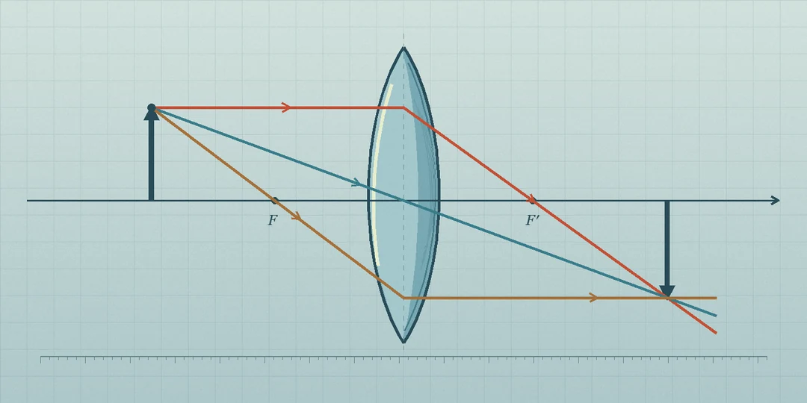
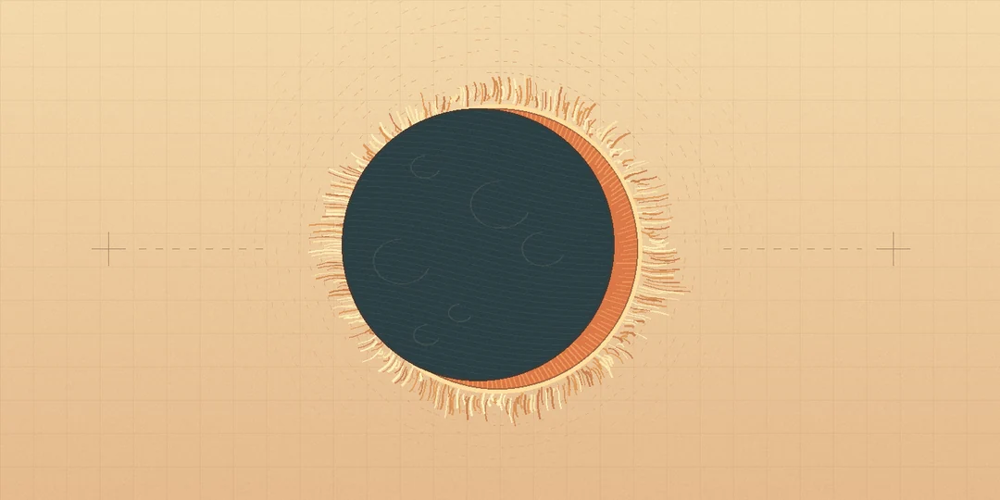
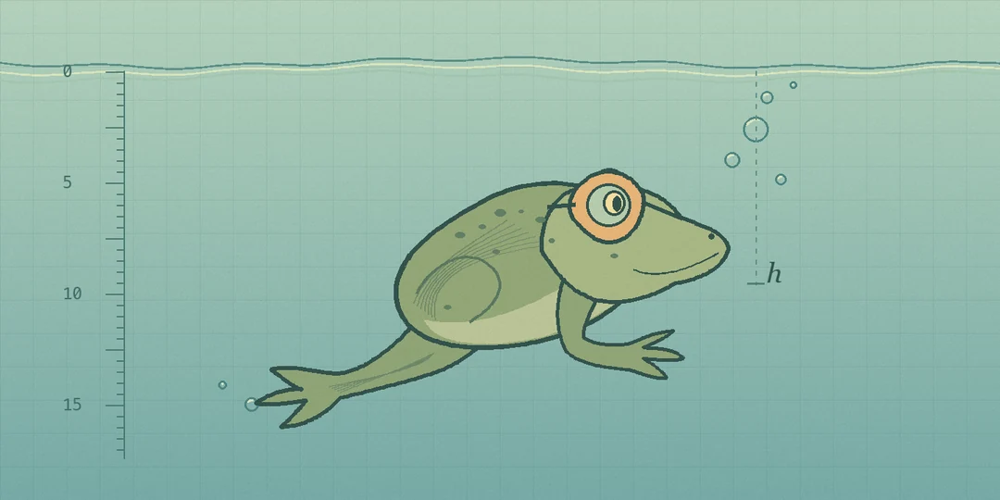

光学 / OPTICS
凸透镜成像
把物体推向焦点，看看倒立的实像在哪里消失，正立的虚像又在哪里出现。
THE CLASSROOM
选一个你想弄明白的问题。
每个实验都能在浏览器里操作，也能单独下载。

光学 / OPTICS
把物体推向焦点，看看倒立的实像在哪里消失，正立的虚像又在哪里出现。

天文 / ASTRONOMY
切换日食、月食和水星凌日，把天体的位置和观测者眼中的画面对起来。

流体 / FLUIDS
带小蛙潜到水下。换一种液体，保持深度相同，压强计上的数字会怎样变？
AT THE LAB BENCH
摆长变成原来的四倍，一次往返要花几倍的时间？先猜一猜，再把摆长从 0.30 米调到 1.20 米。
小角度摆动时，摆长变成四倍，周期变成两倍。
ABOUT ME
高中时我参加物理竞赛，后来回到母校带暑期集训。在上海交大学数学的几年里，我也研究过怎样让机器人学会走路。现在，我在讲台上和学生一起琢磨物理问题。
2026.07 — 至今
在教培机构任教，为零基础物理课制作互动演示，把光路、影子和液体压强带进课堂。
2022.09 — 2026.06
在校期间研究不对称拍卖均衡。2024 年夏，在北卡罗来纳州立大学研究人形机器人的强化学习运动控制。
2025.07 — 2026.01
在渤海证券用股票数据检验因子模型，随后在瑞银把持仓分析和交易核对做成可交互的工具。
2022、2023 年暑期
回母校参加暑期集训教学，给学弟学妹串讲知识点、讲题和答疑。
2020、2021